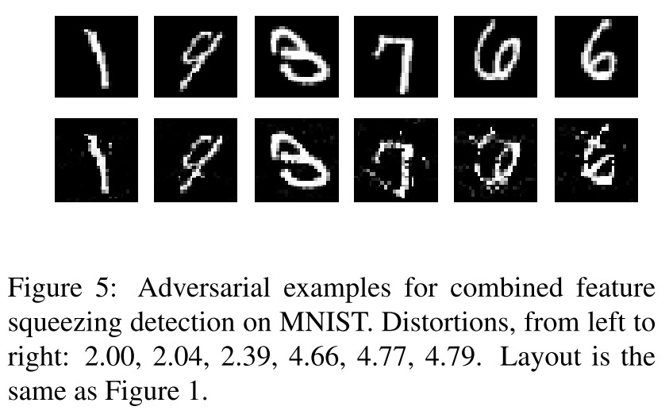
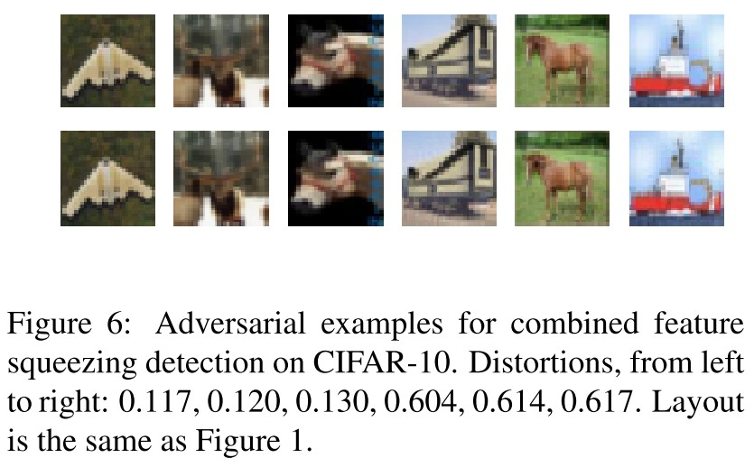
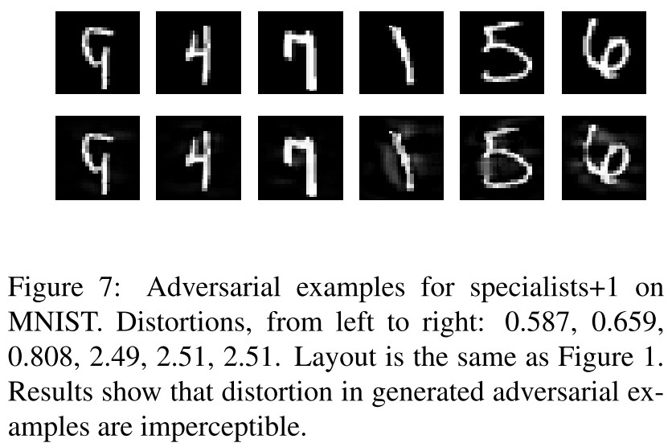
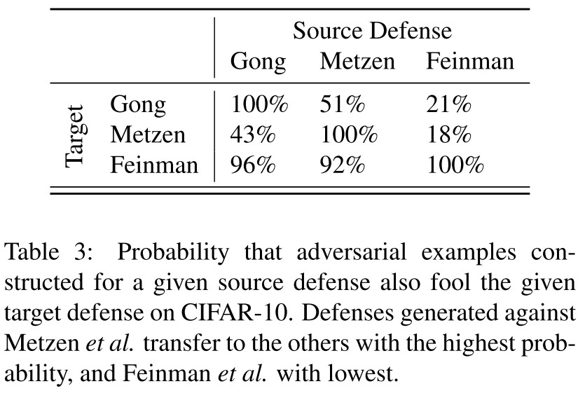
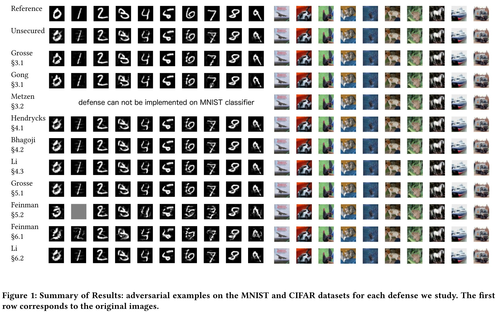
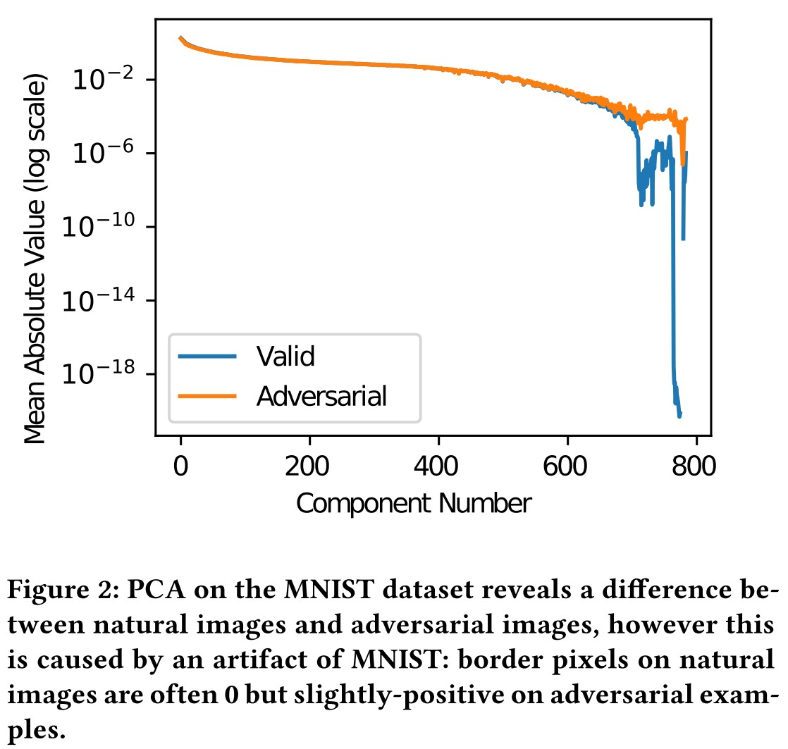
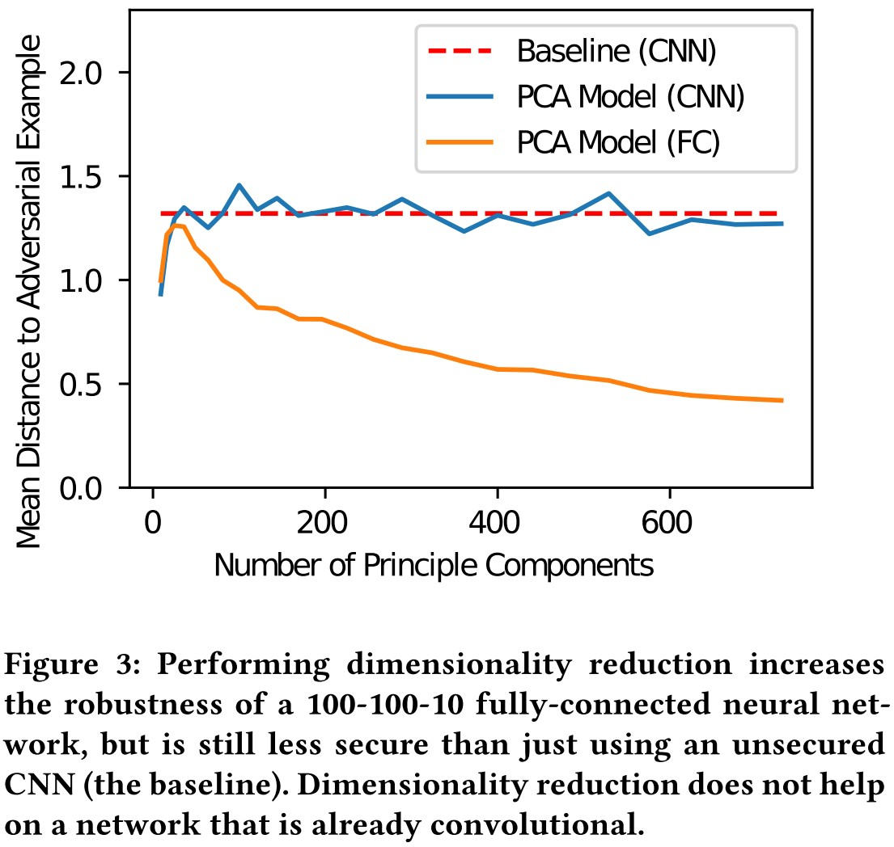
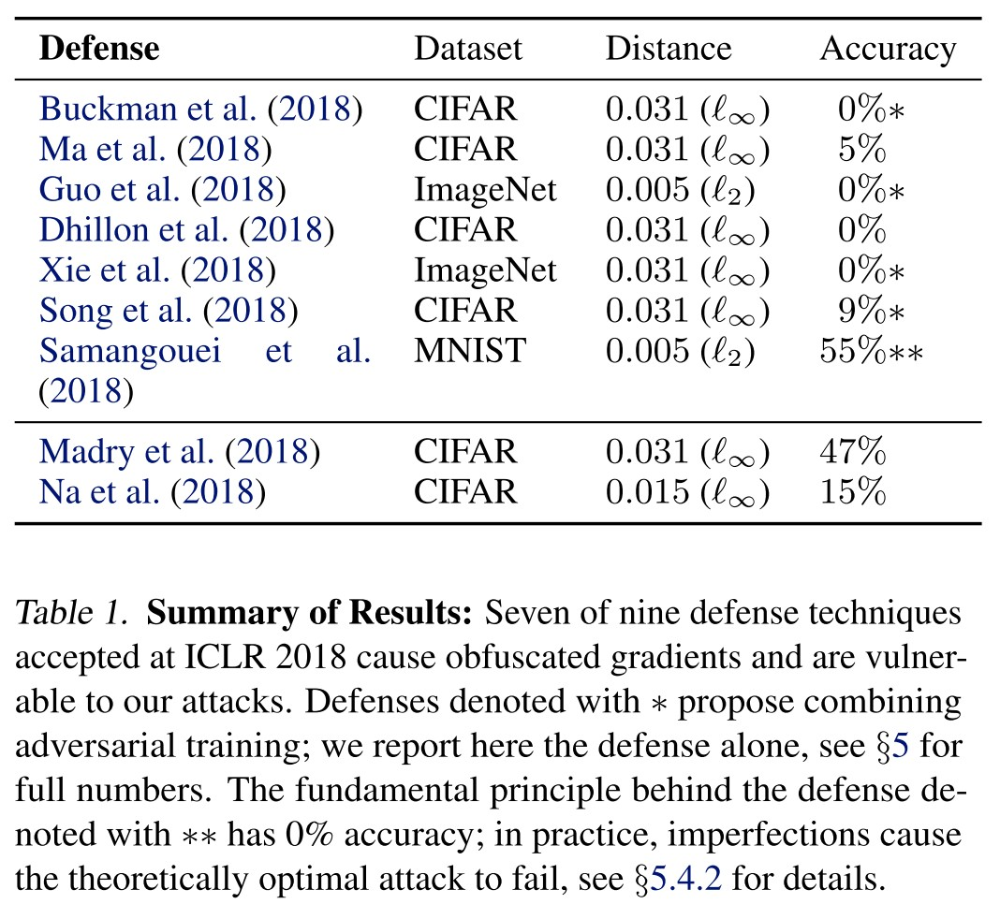

By LI Haoyang 2020.11.11 (branched)
Breach Adversarial DefensesContentPaper-listBreachAdversarial Example Defenses: Ensembles of Weak Defenses are not Strong - 2017Threat model and defense approachExperimentsInspirationsBypassing Ten Detection Methods - AISec 2017Classifier and adversarial exampleThreat model, datasets and approachesSecondary classification based detectionAdversarial Re-training (2 methods)Examining Convolutional Layers (1 method)Principal component analysis detectionInput Image PCA (1 method)Dimensionality Reduction (1 method)Hidden layer PCA (1 method)Distributional detectionMaximum mean discrpancy (1 method)Kernel density estimation (1 method)Normalization detectionDropout randomization (1 method)Mean blur (1 method)LessonsInspirationsObfuscated Gradients Give a False Sense of Security - ICML 2018SettingObfuscated gradientsAttack techniquesBreach proposed defenses in ICLR 2018Adversarial training (Madry et al. 2018)Cascade adversarial training (Na et al. 2018)Thermometer encoding + adversarial training (Szegedy et al. 2013)Input transformations (Guo et al. 2018)Local intrinsic dimensionality (LID) (Ma et al. 2018)Stochastic activation pruning (SAP) (Dhilon et al. 2018)Mitigating through randomization (Xie et al 2018)Pixel defend (Song et al. 2018)Defense-GAN (Samangouei et al. 2018)Evaluation scheme
Nicholas Carlini, David Wagner. Adversarial Examples Are Not Easily Detected: Bypassing Ten Detection Methods. AISec 2017. arXiv:1705.07263
Breached:
Secondary classification based detection
Principal component analysis detection
Distributional detection
Normalization detection
Warren He, James Wei, Xinyun Chen, Nicholas Carlini, Dawn Song. Adversarial Example Defenses: Ensembles of Weak Defenses are not Strong. 2017. arXiv:1706.04701
Breached:
feature squeezing
specialists+1
ensemble of three detectors
Anish Athalye, Nicholas Carlini, David Wagner. Obfuscated Gradients Give a False Sense of Security: Circumventing Defenses to Adversarial Examples. ICML 2018. arXiv:1802.00420
Un-breached:
Adversarial Training
Breached:
Gradient Shattering
Stochastic Gradients
Vanishing & Exploding Gradients
Warren He, James Wei, Xinyun Chen, Nicholas Carlini, Dawn Song. Adversarial Example Defenses: Ensembles of Weak Defenses are not Strong. arXiv preprint 2017. arXiv:1706.04701
We ask whether a strong defense can be created by combining multiple (possibly weak) defenses.
For all the components of these defenses and the combined defenses themselves, we show that an adaptive adversary can create adversarial examples successfully with low distortion.
They consider a white-box scenario where the adversary has full knowledge of the model and two capacities of adversaries:
There are two major approaches for defense
In this paper, they consider three ensembles of defenses:
Feature squeezing and specialists+1 (designed to ensemble)
Feature squeezing proposes to preprocess the input examples by color depth reduction, spatial smoothing or their combination.
Specialists+1
The defense consists of a generalist classifier (which classifies among all classes) and a collection of specialists (which classify among subsets of the classes).
A customized ensemble of adversarial detectors
They randomly sample 100 correctly classified images from two datasets, MNIST and CIFAR-10.
Adversarial examples are generated using an optimization approach with the following objective:
The measurement of distortion is the $L_2$-norm, i.e.
with input images scaled to $[0,1]$.
They generate adversarial examples adaptive to feature squeezing defense as shown below.

They use a modified multiple classifier version of objective to generate adversarial examples for specialists+1:
In which, $U_i$ is the set of classes that classifier $j$ is mostly confused.

They ensemble a set of detectors and test the resulted robustness. This ensemble is also found to be not robust enough.
Attack results on CIFAR-10 The $L_2$ distortion required to construct adversarial examples on an unsecured network is 0.11. To construct adversarial examples on this network $G(\cdot)$ with the three defenses increases the distortion to 0.18, an increase of 60%. However, this distortion is still imperceptible.
This paper is too old to give good inspirations.
It claims that an ensemble of weak defenses does not make it strong and it seems to be true, since these defenses are "weak".
Code: http://nicholas.carlini.com/code/nn_breaking_detection
Nicholas Carlini, David Wagner. Adversarial Examples Are Not Easily Detected: Bypassing Ten Detection Methods. AISec 2017. arXiv:1705.07263
In order to better understand the space of adversarial examples, we survey ten recent proposals that are designed for detection and compare their efficacy. We show that all can be defeated by constructing new loss functions.

The classifier they consider in this paper is a feed-forward neural network, denoted as $F(\cdot)$. The probability that $x$ is labeled with class $i$ is denoted as $F(x)_i$, and the $i$th layer's output is denoted as $F^{i}(x)$.
The $i$th layer computes
and for a network with $n$ layers, the output of the $n$th layer, known as logits, is $Z(x)=F^n(x)$ and the final output is a softmaxed logits, representing the distribution of probabilities:
The classification result $C(x)$ is then acquired using argmax:
An input is defined to be natural to the classifier if it is an instance that was benignly created. For a natural input $x$, classified as $C(x)=l$, $x^\prime$ is defined as an untargeted adversarial example if $x^\prime$ is close to $x$ and $C(x^\prime)\neq l$, and $x^\prime$ is further called a targeted adversarial example if it's designed to be classified as a target label, i.e. $C(x^\prime)=t\neq l$.
They use a configured C&W attack to generate adversarial examples by solving the following optimization using gradient descent:
The loss function $\ell$ is defined as
This loss is designed to close up the difference between the target logit and the next-most-likely logit. The use of logit rather than probability is critical here.
They consider two datasets, MNIST and CIFAR-10.
They consider three different threat models with the presence of a detector.
Zero-Knowledge Adversary
It generates adversarial example on the unsecured model $F$ without awareness of the existence of a detector $D$.
Perfect-Knowledge Adversary
It is aware of the existence of a detector $D$, knows the model parameters used by $D$ and is able to use these to attempt to evade both the original network and the detector simultaneously.
Limited-Knowledge Adversary
It is aware that the model is being secured with a given detection scheme, knows how it was trained, but does not have access to the trained detector $D$.
Corresponding to the three threat models, they propose three approaches:
Evaluate with a strong attack (Zero-Knowledge)
In this step we generate adversarial examples with C&W’s attack and check whether the defense can detect this strong attack.
If this succeeds, then the following is not interesting.
Perform an adaptive, white-box attack (Perfect-Knowledge)
To perform this attack, we construct a new loss function, and generate adversarial examples that both fool the classifier and also evade the detector.
Construct a black-box attack (Limited-Knowledge)
This evaluation is only interesting if (a) the zero-knowledge attack failed to generate adversarial examples, and (b) the perfect-knowledge attack succeeded.
In order to mount this attack, we rely on the transferability property: the attacker trains a substitute model in the same way as the original model, but on a separate training set (of similar size, and quality).
This category of detection schemes builds a secondary classifier which attempts to detect adversarial examples.
Grosse et al. introduce a new $N+1$ class, with one class solely for adversarial examples and train the network to detect adversarial examples, as shown in the following procedure:
Gong et al. use a similar method, but instead of re-training the model, they construct a binary classifier $D$ that simply learns to partitions the instances $x$ from $x^\prime$ by training on the following set
We re-implement these two defenses and find that adversarial retraining is able to detect adversarial examples when generated with the fast gradient sign and JSMA attacks with near-100% accuracy.
The attack fails in Zero-Knowledge Attack Evaluation, but succeeds in Perfect-Knowledge Attack Evaluation and Limited-Knowledge Attack Evaluation (for Grosse et al.)
For the defense proposed Gong et al., they constructed a substitute $N+1$ classifier under perfect knowledge scenario, i.e.
That is, we directly attack the defended model. Our experiments revealed that these defenses are ineffective and add almost no increase in robustness.
Metzen et al propose to augment the classification neural network with a detection neural network that takes its input from various intermediate layers of the classification network. This detection network is further trained identically to the detector proposed by Gong et al.
We then train the detector by attaching it to the output ofthe first residual block as done in [18]. We confirmed that their detector is able to detect adversarial examples with 99% probability on simple attacks (fast gradient sign or JSMA).
In Zero-Knowledge Attack Evaluation,
The best detector we were able to train correctly obtains an 81% true positive rate at 28% false positive rate.
In Perfect-Knowledge Attack Evaluation,
Our white-box attack completely defeats Metzen’s defense: it is able to produce adversarial examples that simultaneously are mis-classified by the original network and evade the detector.
They use the same function $G(\cdot)$ as before.
And this defense also fails in Limited-Knowledge Attack Evaluation.
Hendrycks & Gimpel use PCA to detect natural images from adversarial examples, finding that adversarial examples place a higher weight on the larger principal components than natural images and lower weight on the earlier principal components

In Zero-Knowledge Attack Evaluation,
On the MNIST data set, their defense does detect zeroknowledge attacks, if the attacker does not attempt to defeat the defense.
But looking deeper, they find that this difference is intrinsic in MNIST
In short, the detected difference between the natural and adversarial examples is because the border pixels are nearly always zero for natural MNIST instances, whereas typical adversarial examples have non-zero values on the border.
In Perfect-Knowledge Attack Evaluation,
We can generate adversarial examples that are restricted to change only the first k principal components.
Bhagoji et al. propose a defense based on dimensionality reduction. They reduce the $W\cdot H\cdot C=N$-dimensional input to a much smaller $K$-dimensional input using PCA and train a classifier on this smaller input. Since PCA loses spatial locality, a convolutional network cannot be used.
This defense restricts the attackers such that they can only manipulate the first $K$ components.

They train such models with $K$ dimensions ranging form 9 to 784 components.
In Perfect-Knowledge Attack Evaluation,
The most difficult model to attack uses only the first 25 principal components.
However, crucially, we find that even the model that keeps the first 25 principal components is less robust than almost any standard, unsecured convolutional neural network;
Bhagoji et al. also propose to project the images into a reduced-dimension manifold and train a CNN on it, but
In our experiments we found that this approach is no more robust than an unsecured convolutional network (applied to the original image), despite only using a limited number of the principal components
Li et al. apply PCA to the values after inner convolutional layers of the neural network, and use a cascade classifier to detect adversarial examples. Specifically, they propose building a cascade classifier that accepts the input as natural only if all classifiers $C_i$ accept the input, but rejects it if any do. Each classifier $C_i$ a linear SVM that acts on the PCA of the $i$th convolutional layer of the network.
In Zero-Knowledge Attack Evaluation,
This results causes the cascade classifiers to have a 92% and 98% false positive rates on MNIST/CIFAR. We conclude that Li’s defense is not effective against the C&W attack.
These defenses detect adversarial examples by comparing the distribution of natural images to that of adversarial examples.
Grosse et al. use an approximation of the computationally infeasible Maximum Mean Discrepancy (MMD) that is used to test whether two sets are drawn from the same underlying distribution.
They use Fisher's permutation test to test whether $X_1$ and $X_2$ are drawn from the same distribution as follows
In Zero-Knowledge Attack Evaluation,
Even when using a set of 100 images, MMD fails to reject the null hypothesis (p > 0.05). MMD also fails to detect attacks on CIFAR, even with a set size as large as 10, 000 (which uses every sample in the test set).
It seems to indicate that adversarial examples are from the same distribution of natural examples?
Feinman et al. use a Gaussian Mixture Model to model outputs from the final hidden layer of a neural network, and argue that adversarial examples belong to a different distribution than that of natural images.
Given an instance $x$ labeled as $t$, kernel density estimation estimates the likelihood of $x$ as
The detector is then constructed by selecting a threshold $\tau$ and reporting $x$ as adversarial if $KDE(x)<\tau$, otherwise reporting $x$ as natural.
In Zero-Knowledge Attack Evaluation,
Feinman’s defense is able to detect C&W adversarial examples on MNIST, but not on CIFAR.
Surprisingly, we find that 80% of the time, the adversarial example has a higher likelihood score than the original image.
In Perfect-Knowledge Attack Evaluation,
After obtaining the detectable adversarial example $\hat{x}$ using C&W attack, they crafted a further optimization with penalty on being detected, i.e.
where the penalty is
This approach is effective at generating adversarial examples for MNIST that are not detected by Feinman’s defense.
We believe the reason this defense is so much more effective on MNIST than on CIFAR because this defense is effectively a Knearest-neighbor classifier with a neural network feature extractor.
In fact, prior work has shown that using an RBF kernel SVM (essentially identical to what is done here) is effective at defending MNIST to adversarial examples.
In Limited-Knowledge Attack Evaluation,
We found that when the defender uses the first 95% of the training data, and the last 5% of the training data is left for the adversary (who uses it to form their own KDE estimator), the attack still succeeds with equal distortion.
Feinman et al. propose a second detection method called Bayesian neural network uncertainty that measures the uncertainty of the neural network on the given input.
They add randomization to the network using Dropout, hoping that a natural image will have the same (correct) label regardless of the random values chosen, while adversarial examples not.
Apply the randomized network $F_r$ to the input $L$ times, the uncertainty is defined as
in which $||\cdot||$ denotes the squared $L_2$ norm.
In other words, the uncertainty is the sum of the variances of each component of the output, computed over the $L$ outputs from the randomized network.
The detector is constructed with a threshold, i.e. the example is adversarial if $U(x)>\tau$, otherwise natural.
When we run this detection scheme on the adversarial examples generated by the FGS and JSMA attack algorithms on MNIST, it detects 96% of adversarial examples with a false positive rate lower than 1% when $\tau= 0.02$.
In Zero-Knowledge Attack Evaluation,
We generated adversarial examples with C&W’s attack and find 75% of these adversarial examples are detected by this defense on MNIST. Surprisingly, this defense is even more effective at detecting attacks on CIFAR: it detects 95% of C&W adversarial examples.
In Perfect-Knowledge Attack Evaluation,
They first define a new objective for adversary, i.e.
However, this attack fails: the defense is still able to detect 60% of adversarial examples.
They further notice that $U(\cdot)$ is calculated based on the probability $F(\cdot)$, therefore they change the loss function, sample $K$ different deterministic networks $\{Z_j(\cdot):j\in[1,K]\}$, each with different randomness used during dropout.
They then construct a new loss function by
And use this to launch a C&W attack.
This approach successfully generates adversarial examples that fool the dropout defense with 98% success.
In Limited-Knowledge Attack Evaluation,
It turns out that adversarial examples generated with the white-box approach transfer with high probability across models.
On MNIST, we find that adversarial examples generated with our algorithm transfer to G with 90% success.
The second detection method proposed by Li et al. applies a 3 × 3 average filter to blur the image before applying the classifier.
In Zero-Knowledge Attack Evaluation,
we find that this defense effectively removes low-confidence adversarial examples (80% ineffective)
To ensure they remain adversarial after blurring, we must increase the distortion by a factor of 3×.
In Perfect-Knowledge Attack Evaluation,
They construct a new network $F^\prime$ by
and apply C&W attack.
When we do so, we find that the mean distance to adversarial examples does not increase.
Based on the examination of the ten defense methods above, they conclude several properties of adversarial examples:
And give several recommendations for defenses:
This paper shows the power of adaptive attacks, while most of the evaluated defenses are effective against a zero-knowledge adversary, they fail in face of a perfect-knowledge scenario.
The most intriguing finding should be the failure of those methods that try to detect adversarial examples by distributional hints, it seems to indicate that adversarial examples are or can be in the same distribution with natural examples.
Code: https://github.com/anishathalye/obfuscated-gradients
Anish Athalye, Nicholas Carlini, David Wagner. Obfuscated Gradients Give a False Sense of Security: Circumventing Defenses to Adversarial Examples. ICML 2018. arXiv:1802.00420
This is an analysis against the defenses of adversarial attack.
The classification of the network is denoted as
In which, $f(x)_i$ represents the probability that image $x$ corresponds to label $i$, $x\in[0,1]^{w\cdot h\cdot c}$ is a image of width $w$, height $h$ and $c$ channels. The true label of $x$ is $c^{*}(x)$.
An adversarial example $x^{'}$ suffices two properties, given an image $x$ and classifier $f(\cdot)$:
They consider $l_{\infty}$ and $l_2$ distance in the normalized $[0,1]$ space.
The following model is evaluated:
They use an iterative optimization-based methods, i.e.
For a given instance $x$, search for a $\delta$ such that $c(x+\delta)\neq c^*(x)$ either minimizing $||\delta||$ or maximizing the classification loss on $f(x+\delta)$.
A defense is said to cause gradient masking if it “does not have useful gradients” for generating adversarial examples. gradient masking is known to be an incomplete defense to adversarial examples.
They discover three categories of obfuscated gradients defenses:
Shattered Gradients
It's caused when a defense is non-differentiable, introduces numeric instability or other wise causes a gradient to be nonexistent or incorrect.
Stochastic Gradients
It's caused by randomized defenses, where either the network itself is randomized or the input is randomly transformed before being fed to the classifier, causing the gradients to become randomized.
Exploding & Vanishing Gradients
It's often caused by defenses that consist of multiple iterations of neural network evaluation, feeding the output of one computation as the input of the next.
They summarize the following clues for the possible presence of obfuscated gradient:
One-step attacks perform better than iterative attacks
This indicates that iterative attacks are stuck in local minima.
Black-box attacks are better than white-box attacks
Black-box attacks do not use gradients.
Unbounded attacks do not reach 100% success
An unbounded attack should always reach 100% success unless it's stuck in local minima.
Random sampling finds adversarial examples
This indicates the existence of adversarial examples.
Increasing distortion bound does not increase success
This indicates that the bound is never reached, hence the attack is stuck in local minima.
Just because the adversarial examples are not easy to found, does not prove that the model is adversarially robust.
Backward Pass Differentiable Approximation (BPDA) for shattered gradients
Non-differentiable defenses use a non-differentiable preprocessing model $g(\cdot)$ to pre-process the inputs, i.e.
If $g(\cdot)$ is neither smooth nor differentiable, it's not possible to backpropagate through it the gradient signals that white-box attack requires.
Their circumvent method is to approximate the gradient of $g(x)$ with $x$, i.e.
the derivative of $f(g(x))$ at the point $\hat{x}$ can be then approximated:
hence the backpropagation works again.
The proposed BPDA approach is
Let $f(\cdot)=f^{1\dots j}(\cdot)$ be a neural network, and $f^{i}(\cdot)$ (i.e. the $i$-th layer) is a non-differentiable layer. To approximate $\nabla_x f(x)$, first find a differentiable approximation $g(x)$ such that $g(x)\approx f^{i}(x)$, then approximate $\nabla_x f(x)$ by performing the forward pass through $f(\cdot)$, but on the backward pass, replacing $f^{i}(x)$ with $g(x)$.
Expectation over transformation for stochastic gradients
When the gradients are randomized, the proposed method is to estimate the gradients of the stochastic function.
When the classifier use sampled transformation $t\sim T$ for preprocessing, one can use EOT to optimize the expectation over the transformation, i.e.
The randomized gradient is reconstructed by expectation
Reparameterization for vanishing & exploding gradients
The defenses leading vanishing or exploding gradients use an unstable processor $g(\cdot)$ that causes this trouble for attacks.
They make a change of variable, i.e. $x=h(z)$ for some function $h(\cdot)$ such that $g(h(z))=h(z)$ for all $z$ while $h(\cdot)$ is differentiable.

Adversarial training uses online generated adversarial examples to augment the training data, i.e.
Pros
Cons
The idea is same with adversarial training, i.e. augment data with adversarial examples. But instead doing it online, it training model in cascade, using the adversarial examples of the previous model to augment the data of the next model.
Pros
Cons
The purpose of thermometer encoding is to break the linearity of neural networks.
Given an image $x$, for each pixel color $x_{i,j,c}$, the $l$-level thermometer encoding $\tau(x_{i,j,c})$ is a $l$-dimensional vector where $\tau(x_{i,j,c})_k=1$ if $x_{i,j,c}>k/l$, and $0$ otherwise.
The author performs adversarial training on thermometer encoded networks with the proposed Logit-Space Projected Gradient Ascent (LS-PGA) as an attack.
This defense leads to gradient shattering.
They use BPDA approach to breach this defense, replacing the backwards pass with the following function $\hat{\tau}(x)$
It suffices that
The author propose two transformations to counter adversarial examples:
The authors do not succeed in white-box attacks, crediting lack of access to test-time randomness as “particularly crucial in developing strong defenses”.
They circumvent this defense using a combination of EOT and BPDA.
LID is a general-purpose metric that measures the distance from an input to its neighbors.
The author propose using LID to characterize properties of adversarial examples and detect them.
Instead of actively attacking the detection method, we find that LID is not able to detect high confidence adversarial examples.
SAP randomly drops some neurons of each layer of $f^i$ to $0$ with probability proportional to their absolute value. It essentially applies dropout at each layer where instead of dropping with uniform probability, nodes are dropped with a weighted distribution.
To resolve this difficulty, we estimate the gradients by computing the expectation over instantiations of randomness.
At each iteration of gradient descent, instead of taking a step in the direction of $\nabla_x f(x)$ we move in the direction of $\sum_{i=1}^k\nabla_x f(x)$ where each invocation is randomized with SAP.
The author propose to add a randomization layer before the input to the classifier to defend against adversarial examples.
For a classifier that takes a $299\times 299$ input, the defense first randomly rescales the image to a $r\times r$ image, with $r\in[299,331)$, and then randomly zero-pads the image so that the result is $331\times 331$. The output is then fed to the classifier.
We find the authors’ ensemble attack overfits to the ensemble with fixed randomization. We bypass this defense by applying EOT, optimizing over the (in this case, discrete) distribution of transformations.
The author proposes to use a PixelCNN generative model to project a potential adversarial example back onto the data manifold before feeding it into a classifier under the assumption that adversarial examples mainly lie in the low-probability region of the data distribution.
The authors dismiss the possibility of end-to-end attacks on PixelDefend due to the difficulty of differentiating through an unrolled version of PixelDefend due to vanishing gradients and computation cost.
We sidestep the problem of computing gradients through an unrolled version of PixelDefend by approximating gradients with BPDA, and we successfully mount an end-to-end attack using this technique
Same idea with Pixel defend, but replacing the PixelCNN with GAN.
They show that it's possible to construct an adversarial example on the manifold, i.e.
We therefore construct a second attack using BPDA to evade Defense-GAN, although at only a 45% success rate.
The following elements may be held secret to the defender
We believe any compelling threat model should at the very least grant knowledge of the model architecture, training algorithm, and allow query access.
A defense being specified completely, with all hyperparameters given, is a prerequisite for claims to be testable.
A strong defense is robust not only against existing attacks, but also against future attacks within the specified threat model.
An adaptive attack is one that is constructed after a defense has been completely specified, where the adversary takes advantage of knowledge of the defense and is only restricted by the threat model.
One useful attack approach is to perform many attacks and report the mean over the best attack per image. That is, for a set of attacks $a\in\cal{A}$ instead of reporting the value $\min_{a\in\cal{A}}\text{mean}_{x\in\cal{A}}f(a(x))$, report $\text{mean}_{x\in\cal{A}}\min_{a\in\cal{A}}f(a(x))$.